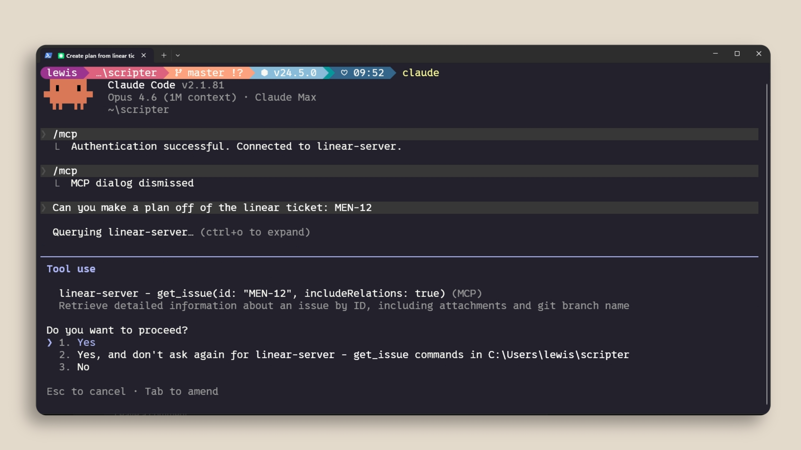
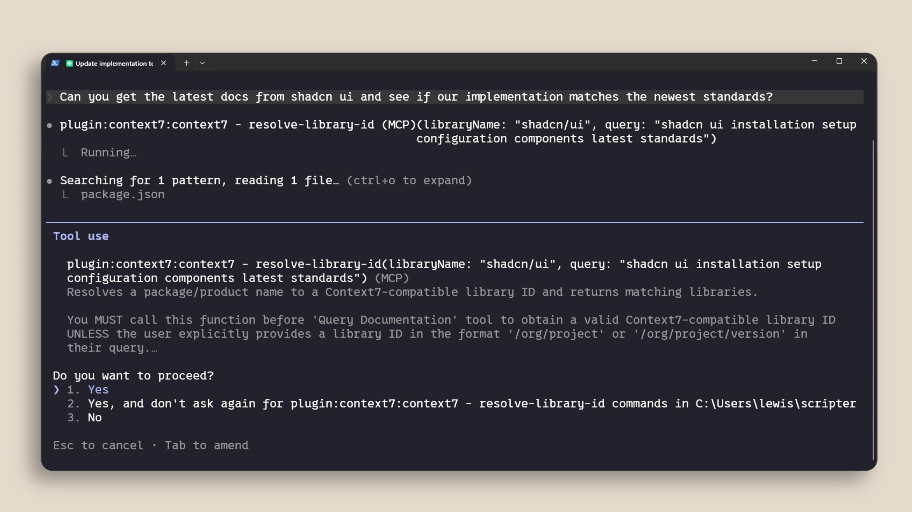
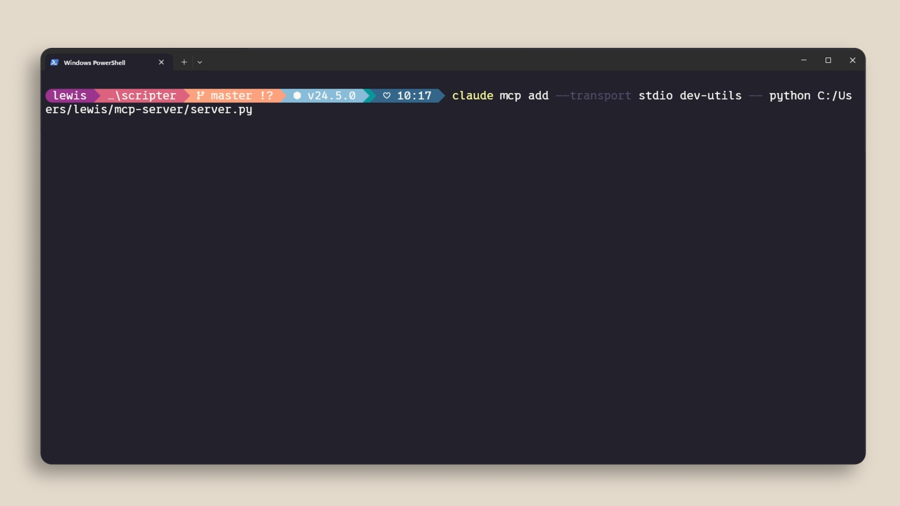
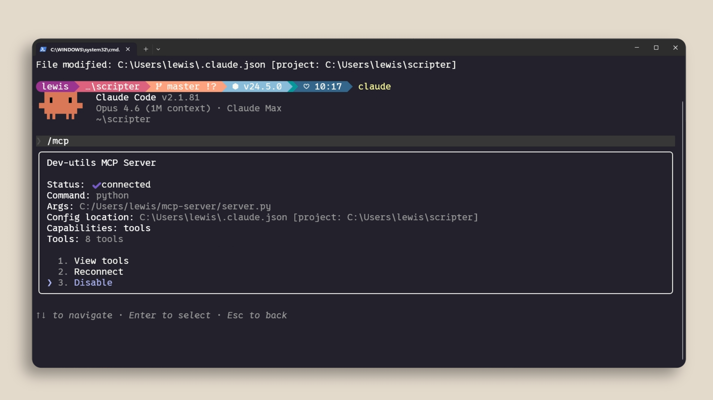

MCP(Model Context Protocol)는 Claude Code를 외부 도구 및 데이터 소스에 연결할 수 있게 해주는 개방형 표준입니다. 질문을 하면 Claude가 자동으로 해당 도구를 사용해야 하는 시점을 파악하여 요청을 더 잘 처리합니다.
여러분의 컨텍스트 상당 부분은 코드베이스 외부, 즉 데이터베이스, 생산성 앱, 공개 저장소 등에 존재합니다. MCP는 이 격차를 해소해 줍니다.
MCP로 무엇을 할 수 있나요?
먼저, 에이전트 AI에서 "도구"의 개념을 이해하는 것이 중요합니다. 도구는 Claude Code와 같은 에이전트에게 작업을 더 효과적으로 완료할 수 있도록 돕는 동작을 수행하는 능력을 부여합니다. 이는 단순히 텍스트 응답만 받는 일반적인 AI와는 다릅니다.
예를 들어, 팀에서 프로젝트 관리에 Linear를 사용한다면, Linear MCP 서버를 추가하여 특정 이슈의 세부 사항을 가져올 수 있습니다. 의존성에 대한 최신 문서가 필요하다면, Context7과 같은 문서 MCP 서버가 Claude Code에 이를 제공할 수 있습니다.


MCP 서버 추가하기
claude mcp add 명령어로 MCP 서버를 추가할 수 있습니다. 두 가지 주요 유형이 있습니다:

- HTTP 서버는 원격 서비스용입니다. 서비스 제공업체에서 호스팅하며 네트워크를 통해 연결합니다.
- Stdio 서버는 로컬 머신에서 실행되는 프로세스용입니다.

Claude Code 세션 내에서 /mcp를 사용하여 서버를 관리할 수 있으며, 연결된 항목 확인, 상태 점검, 불필요한 서버 비활성화가 가능합니다.

서버 범위 지정
MCP 서버는 세 가지 방식으로 범위를 지정할 수 있습니다:
- Local — 현재 프로젝트에서만 사용 가능하며, 본인만 접근할 수 있습니다.
- User — 모든 프로젝트에서 사용할 수 있습니다.
-
Project — 버전 관리에 체크인하는
.mcp.json파일을 사용하여, 코드베이스의 모든 구성원이 자동으로 동일한 서버를 사용할 수 있습니다.
컨텍스트 비용
MCP 서버는 적극적으로 사용하지 않는 경우에도 컨텍스트 윈도우에 도구 정의를 추가합니다. 서버가 많이 구성되어 있으면 사용 가능한 컨텍스트가 줄어듭니다. /mcp를 실행하여 연결된 항목을 확인하고 적극적으로 사용하지 않는 항목은 비활성화하세요.

도구에 CLI 대안이 있는 경우(예: GitHub의 gh 또는 AWS의 aws), CLI가 지속적인 도구 정의를 추가하지 않으므로 컨텍스트 효율이 더 높습니다.
대신 스킬(Skill)을 사용하는 것이 유리할 수도 있습니다. 스킬은 이름과 설명만 컨텍스트에 로드되며, Claude는 사용이 필요하다고 판단할 때만 전체 스킬 내용을 로드합니다.
MCP 도구가 컨텍스트 윈도우의 10%를 초과하면, Claude Code는 자동으로 도구 검색 모드로 전환하여 필요에 따라 적절한 도구를 찾습니다. 다만 이 방식은 안정성이 다소 떨어질 수 있습니다.
요약
MCP는 Claude Code를 외부 도구 및 데이터 소스에 연결합니다. claude mcp add로 서버를 추가하세요. .mcp.json으로 프로젝트 범위를 지정하면 팀원들이 자동으로 서버를 사용할 수 있습니다. 그리고 적극적으로 사용하지 않는 서버를 비활성화하여 컨텍스트 사용량을 관리하세요.